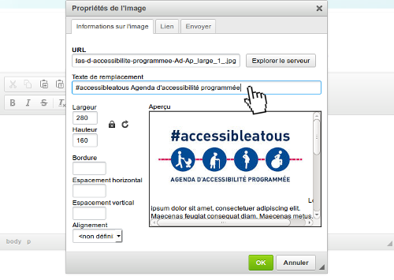
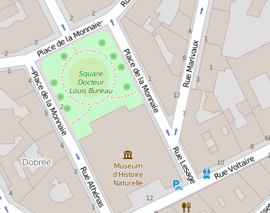

On distingue deux types d'images :
- les images porteuses d'informations (qui ont besoin d'un texte de remplacement) ;
- les images de décoration (qui ne doivent pas avoir de texte de remplacement).
On distingue deux types d'images :
Les images véhiculent parfois une information non textuelle. Cette information, qui peut aider à comprendre le contenu auquel elle se rapporte, doit pouvoir être accessible à tous.
Fournir une alternative est indispensable pour les utilisateurs qui ne perçoivent pas, ou perçoivent mal, le contenu visuel. C'est le cas des personnes aveugles ou malvoyantes. Un lecteur d'écran va pouvoir accéder à cette alternative et le restituer à l'utilisateur.
De même, pour les personnes qui présentent des difficultés de compréhension face à certaines représentations visuelles, (iconographie, peintures, représentations multi-dimensionnelles, graphiques ...), une alternative peut aider à en comprendre le sens ou à en extraire l'information importante.
Pour toutes ces raisons, il est essentiel de traduire de manière textuelle l'information nécessaire et suffisante qu'apportent les images.
Lorsque ces images constituent des liens, ce n'est alors plus l'information qu'elles véhiculent qui est essentielle, mais la fonction du lien qu'elles constituent. Dans cette situation, elles permettent aux logiciels pilotés à la voix par une personne en situation de handicap moteur, de localiser plus facilement le lien à activer.
Lorsque l'information à traduire est courte, vous allez utiliser le texte de remplacement.
Dans votre éditeur de texte, vous devez éditer les propriétés de l'image pour accéder à ce texte de remplacement. Généralement, l'ajout d'une image ou l'édition de ses propriétés sont accessibles par un bouton représentant une petite image :
Ci-dessous, un exemple de fenêtre des propriétés de l'image, dans l'éditeur CKEditor, avec un texte de remplacement.

Ci-dessous, un exemple de fenêtre des propriétés de l'image dans l'éditeur de texte de Wordpress, avec un texte de remplacement.

Selon l'éditeur de texte que vous avez à votre disposition, le champ correspondant au texte de remplacement d'une image peut-être désigné par :
Le texte de remplacement (ou alternative textuelle) d'une image est un texte présent avec l'image dans le code de la page, vous ne le voyez pas lorsque vous consultez le site. Cette information est accessible à un lecteur d'écran, et certaines autres personnes peuvent demander son affichage à la place de l'image.
Vous pouvez rencontrer différents cas de représentation.
Dans ces cas, le texte de remplacement est généralement le texte présent sur l'image. Par contre, si ce texte se retrouve dans le contenu qu'elle accompagne, alors cette image est une image de décoration et ne doit pas avoir d'alternative. Par exemple, vous écrivez un article sur une manifestation à venir en indiquant la date et le lieu, et l'image représente l'affiche de la manifestation sur laquelle on peut lire le lieu et la date. Dans ce cas cette image n'apporte pas d'information supplémentaire. Lui mettre un texte de remplacement serait redondant.
Dans l'exemple ci-dessus, l'image contient les informations suivantes :
Dans ces cas, si l'information est essentielle à la compréhension, vous devez la décrire dans le texte de remplacement. Il est important de retenir qu'il ne faut pas décrire nécessairement en détails les images. Vous devez fournir l'information suffisante et nécessaire.
Dans certains éditeurs, vous avez également la possibilité de définir une infobulle sur les images. Une infobulle est une information qui apparaît au survol de l'image. Elle est désignée par les termes infobulles, titre ou encore title selon l'éditeur de texte. Cette infobulle ne doit jamais se substituer au texte de remplacement. Vous pouvez le renseigner, à la seule condition que le texte que vous y inscrivez soit identique au texte de remplacement. Cette infobulle peut-être utile dans le cas d'une image qui est de mauvaise qualité par exemple, qui contient du texte et pourrait poser problème à des personnes ayant des déficiences visuelles.
Ci-dessous, un exemple de fenêtre des propriétés de l'image dans l'éditeur de texte de Wordpress, avec un texte de remplacement et une infobulle renseignés.

Le texte de remplacement n'est à utiliser que dans le cas d'images qu'il est simple de décrire en une phrase. Dans le cas d'une image complexe, qui demande la rédaction d'un paragraphe entier (par exemple un plan de quartier, un graphique, un histogramme), vous devez fournir une description détaillée.
Lorsqu'une image demande une description détaillée, vous allez rédiger, sous cette image, un paragraphe. C'est le cas des images complexes comme un graphique de données ou une infographie.
Pour permettre à un utilisateur de lecteur d'écran de faire le lien entre votre image et sa description détaillée, vous allez procéder de la manière suivante :
Il est important de noter, que votre description détaillée doit être correctement structurée. Par exemple, dans le cas d'un graphique complexe, une description détaillée pourrait reprendre l'information sous la forme d'un tableau ou d'une liste. Une description détaillée n'est pas nécessairement un paragraphe simplement, c'est à vous de juger de la meilleure structuration possible pour restituer l'information. Consultez les fiches concernées pour en savoir plus.
Ci-dessous l'exemple d'une image complexe. Il s'agit d'un plan de localisation. Un texte de remplacement n'est pas suffisant pour retranscrire toute l'information présente sur ce plan.

L'entrée du musée d'histoire naturelle est accessible depuis la rue Voltaire.
Depuis la rue Athénas, descendre vers la rue Voltaire et prendre sur la gauche, l'entrée du musée est située sur votre gauche.
Depuis la rue Lesage, descendre vers la rue Voltaire et prendre sur la droite, l'entrée du musée est située sur votre droite.
Depuis la Rue Marivaux, redescendre vers la rue Lesage, continuer tout droit pour atteindre la rue Voltaire, l'entrée du musée est située sur votre droite.
C'est un frein à l'accessibilité que d'utiliser la fonction permettant de renseigner un texte de remplacement à l'image, on une infobulle, pour y insérer des mots clés ou phrases pour améliorer un référencement.
En effet, un utilisateur de lecteur d'écran se verra restituer toutes ces informations. L'expérience de lecture sera alors surchargée d'éléments parasites et rendra incompréhensible le contenu du site.
Toutes les images n'ont pas besoin d'un texte de remplacement. Si l'image est une décoration (elle n'apporte aucune information essentielle au contenu), elle ne doit pas avoir de texte de remplacement. Pour la même raison qu'évoquée au-dessus, cela alourdit la restitution du contenu pour un utilisateur de lecteur d'écran, pour un gain en information nul.
Si vous créditez une image, vous ne devez pas utiliser le texte de remplacement de l'image. Tout d'abord, cela signifie que tout le monde n'a pas accès à cette information. Ensuite, le texte de remplacement sert à décrire l'image, et non pas à l'attribuer. Dans le cas précis des crédits, la méthode décrite dans la description détaillée est tout à fait appropriée.